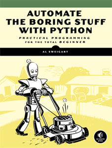
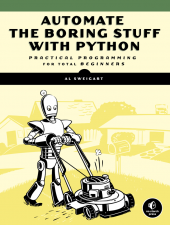

Everyone in the 21st century needs to learn to code, right? But not everyone needs to become a software engineer or computer scientist. Automate the Boring Stuff with Python is written for office workers, students, administrators, and anyone who uses a computer how to write small, practical programs to automate tasks on their computer.
{kind=link}
- Have a folder with thousands of files that need to be renamed?
- Need to look through thousands of rows in an Excel spreadsheet looking for ones to update?
- Have to scrape data off of several web pages?
Normally this would involve hours of tedious clicking and typing. But programming your computer to do it can save you a lot of time and effort.
Automate teaches total beginners with no programming experience the Python programming language. (Though Part 2 will be of interest to seasoned developers as well.) Python has a gentle learning curve yet is also used by professional software developers. You don't need to know all the complexities of algorithms and syntax, you just want to write basic programs to automate mundane computer tasks. In the process, even total beginners will learn to use Python to control their computers without having to learn complex information about computer science. This is a practical programming guide for the rest of us.
Automate the Boring Stuff with Python is released under a Creative Commons license. You can read it, in full, on this website. Programming is a skill that should be in the hands of everyone: No, Seriously, You Should Learn to Code..
You can also support the author by purchasing a book or ebook: Purchase a copy of Automate the Boring Stuff with Python.
Table of Contents
Part 1 - The Basics of Python Programming
- Introduction
- Python Basics
- Flow Control
- Functions
- Lists
- Dictionaries and Structuring Data
- Manipulating Strings
Part 2 - Automating Tasks
- Pattern Matching with Regular Expressions
- Reading and Writing Files
- Organizing Files
- Debugging
- Web Scraping
- Working with Excel Spreadsheets
- Working with PDF and Word Documents
- Working with CSV Files and JSON Data
- Time, Scheduling Tasks, and Launching Programs
- Sending Email and Text Messages
- Manipulating Images
- Controlling the Keyboard and Mouse with GUI Automation
Al Sweigart is the author of Invent Your Own Computer Games with Python, Making Games with Python & Pygame, and Hacking Secret Ciphers with Python. His books are freely available under a Creative Commons license from http://inventwithpython.com.